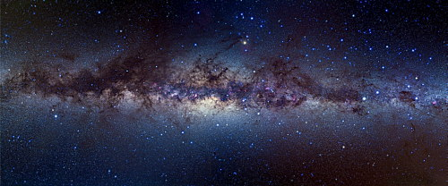
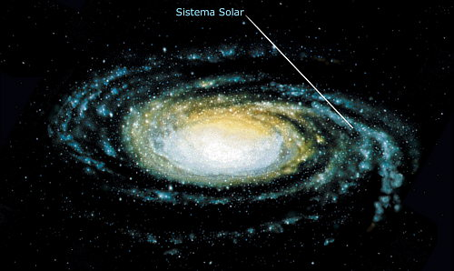

La galaxia de la Vía Láctea es la que contiene el Sistema Solar y, por lo tanto, la Tierra. Forma parte del Grupo Local. En noches serenas podemos ver una franja blanca que atraviesa el cielo de lado a lado, con muchas estrellas.

Son sólo una pequeña parte de nuestros vecinos. Entre todos formamos la Vía Láctea, nuestra galaxia. Los romanos la llamaron "Camino de Leche", que es lo que significa via lactea en latín. El Sistema Solar está en uno de los brazos
de la espiral, a unos 25.800 años luz del centro y unos 22.000 del extremo. La Via Láctea és una galaxia grande, espiral y puede tener unos 300.000 millones de estrellas, entre ellas, el Sol. En total mide unos 100.000 años luz de diámetro
y tiene una masa de más de dos billones de veces la del Sol.

Cada 225 millones de años el Sistema Solar completa un giro alrededor del centro de la galaxia. Se mueve a unos 270 km. por segundo. No podemos ver el brillante centro porque se interponen materiales opacos, polvo cósmico y gases
fríos, que no dejan pasar la luz. Se cree que contiene un poderoso agujero negro. La Vía Láctea tiene forma de lente convexa. El núcleo tiene una zona central de forma elíptica y unos 8.000 años luz de diámetro. Las estrellas del núcleo
están más agrupadas que las de los brazos. A su alrededor hay una nube de hidrógeno, algunas estrellas y cúmulos estelares. Junto con las galaxias de Andrómeda (M31) y del Triángulo (M33), las Nubes de Magallanes (satélites de la Vía Láctea),
las galaxias M32 y M110 (satélites de Andrómeda), galaxias y nebulosas más pequeñas y otros sistemas menores, forman un grupo vinculado por la gravedad denominado Grupo Local.
Galaxia Enana del Can Mayor. La Enana del Can Mayor, como su nombre lo dice, es una galaxia Enana ubicada en el Grupo Local (El de la Vía Láctea) y a la vez en la constelación Canis Maior. Tiene forma elíptica y también tiene aproximadamente mil millones
de estrellas, de las cuales la mayoría son gigantes rojas.
Está a 25.000 años luz de nuestro sistema solar y a 42.000 años luz del centro de la Vía Láctea.
Cuando nos preguntamos cuál será la galaxia más cercana a la nuestra, generalmente se nos viene a la mente la galaxia Andrómeda (M31), tal vez porque esta es una de las más famosas y que junto con nuestra galaxia la Vía Láctea,
conforman las dos mayores galaxias del grupo al que pertenecen, el llamado "Grupo Local".
En el Universo las galaxias cercanas viajan juntas ligadas por su propia fuerza gravitatoria, éstos grupos de galaxias a su vez forman cúmulos, un cúmulo es un conjunto de varios grupos de galaxias, nuestra galaxia así como la
galaxia Andrómeda pertenecen al Grupo Local y este a su vez forma parte del llamado "Cúmulo de Virgo".
Aunque las galaxias están dentro del mismo grupo, éstas suelen estar muy lejanas unas de otras, desde los poco más de 20 mil años luz de distancia, hasta los más de cinco millones de años luz, generalmente creemos que la galaxia
Andrómeda es la más cercana a la nuestra, ésto únicamente porque es sin duda, la más famosa, pero en realidad hay alrededor de 30 galaxias mucho más cercanas a la Vía Láctea que la Galaxia de Andrómeda, y la más cercana es la Galaxia Enana
del Can Mayor.
cree que está siendo destruida por la gravedad de la Vía Láctea ya que el cuerpo principal esta extremadamente degradado, esto produce la creación de los "anillos de Monoceros" una estructura que rodea a la Vía Láctea unas tres
veces.
La galaxia enana de Sagitario ha sido crucial en la evolución de la Vía Láctea e incluso el Sol podría haberse formado a raíz de una de las interacciones entre ambas, según un estudio de un equipo internacional de investigadores.
es una galaxia satélite de la Vía láctea. Con un diámetro de cerca de 10 000 años luz, se encuentra actualmente a 70 000 años luz de la Tierra y se mueve en una órbita polar a unos 50 000 años luz del centro de nuestra galaxia.
Estudios recientes sugieren que esta galaxia era antes rica en materia oscura y que puede ser la responsable del aspecto de los brazos espirales de la Vía Láctea, acentuando su aspecto y formando estructuras anulares en sus regiones
exteriores, estimando también que dentro de 10 millones de años chocará con el disco de nuestra galaxia.
Descubierta en 1994 por Rodrigo Ibata, Mike Irwin y Gerry Gilmore, se trataba en el momento de su descubrimiento de la galaxia conocida más próxima a la nuestra — título que perdió en 2003 en provecho de la galaxia Enana del Can
Mayor. Se sitúa en un emplazamiento opuesto al sistema solar en relación al centro galáctico, lo que la convierte en un objeto muy difícil de observar, aunque cubra una región ancha del cielo.
SagDEG parece ser una antigua galaxia. Los análisis espectróscopicos parecen indicar que posee poco polvo interestelar y que está compuesta principalmente por estrellas de población II, viejas y pobres de metales.
La Gran Nube de Magallanes (LMC, por sus siglas en inglés) es una galaxia enana, la tercera más próxima a la Vía Láctea y que constituye una galaxia satélite de esta.
Fue hace unos 700 millones de años cuando esta galaxia cruzó el límite de la Vía Láctea, un hecho reciente según los estándares cosmológicos. Así, debido a su gran contenido de materia oscura, alteró fuertemente la estructura
y el movimiento de nuestra galaxia al precipitarse en ella.
Los efectos de este hecho todavía se están presenciando hoy en día y deberían forzar una revisión de cómo evolucionó nuestra galaxia, dicen los astrónomos. La Gran Nube de Magallanes, ahora una galaxia satélite de la Vía Láctea,
es visible como una tenue nube en los cielos nocturnos del hemisferio sur, como lo observó su homónimo, el explorador portugués del siglo XVI Fernando de Magallanes.
Investigaciones anteriores han revelado que, al igual que la Vía Láctea, está rodeada por un halo de materia oscura: partículas elusivas que rodean a las galaxias y no absorben ni emiten luz, pero tienen efectos gravitacionales
dramáticos sobre el movimiento de las estrellas y el gas en el universo.
Usando un modelo estadístico sofisticado que calculó la velocidad de las estrellas más distantes de la Vía Láctea, un equipo de la Universidad de Edimburgo descubrió cómo la Gran Nube de Magallanes deformaba el movimiento de nuestra
galaxia. El estudio ha sido publicado en Nature Astronomy.
Los investigadores encontraron que la enorme atracción del halo de materia oscura de la Gran Nube de Magallanes tira y tuerce el disco de la Vía Láctea a 32 km/s o 115.200 kilómetros por hora hacia la constelación de Pegaso. Para
su sorpresa, también encontraron que la Vía Láctea no se estaba moviendo hacia la ubicación actual de la Gran Nube de Magallanes, como se pensaba anteriormente, sino hacia un punto en su trayectoria pasada.
Creen que esto se debe a que la Gran Nube de Magallanes, impulsada por su fuerza gravitacional masiva, se está alejando de la Vía Láctea a una velocidad aún mayor de 370 km/s, alrededor de 1,3 millones de kilómetros por hora.
Andrómeda es una galaxia compuesta por sistemas estelares, polvo y gas, todos los cuales se ven afectados por la gravedad. Se encuentra a 2,5 millones de años luz de la Tierra y es el único cuerpo celeste visible a simple vista que no pertenece a la Vía
Láctea.
Tiene doble núcleo Su tamaño es comparable al de la Vía Láctea. El tamaño de Andrómeda es solo un poco más grande, pero la Vía Láctea tiene una masa más grande y más materia oscura. Hay varias galaxias satélite en Andrómeda que
interactúan gravitacionalmente: galaxias enanas elípticas: M32 y M110 y galaxia espiral pequeña M33. Su diámetro es de 220.000 años luz. Es aproximadamente el doble de brillante que la Vía Láctea y tiene mil millones de estrellas. Casi
el 3% de la energía emitida por Andrómeda se encuentra en la región infrarroja, mientras que para la Vía Láctea este porcentaje es del 50%. Por lo general, este valor está relacionado con la tasa de formación de estrellas, por lo que es
alto en la Vía Láctea y bajo en Andrómeda.
La galaxia Andrómeda colisionará con la Vía Láctea dentro de 4 mil millones de años. Aunque el Sol y otras estrellas permanecerán intactas, el choque titánico probablemente empujará al Sistema Solar a las afueras de las galaxias
fusionadas. Investigadores llegaron a esta conclusión después de usar el Telescopio Espacial Hubble, entre 2002 y 2010, para rastrear cuidadosamente el movimiento de Andrómeda mientras se desplaza en su trayectoria. La galaxia de Andrómeda,
a 770 mil pársecs (2.5 millones de años luz) de distancia, es la galaxia espiral más cercana a la Vía Láctea.
Por décadas se ha sabido que Andrómeda se dirige directamente a nuestra galaxia a un rango de 110 kilómetros por segundo, siendo que las dos galaxias colisionarán como resultado de su impulso gravitacional mutuo. Dentro de 4 mil
millones de años desde ahora, las dos galaxias pasarán sobre sí mismas para que 2 mil millones de años después del suceso se terminen de fundir en un «abrazo» permanente, y formar una sola galaxia.